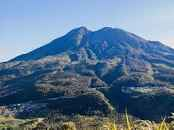

KEINDAHAN INDONESIA

Gunung
adalah sebuah bentuk yang menonjol di atas wilayah
sekitarnya. Sebuahgunung biasanya lebih tinggi dan curam dari sebuah bukit,
tetapi ada kesamaan, danpenggunaansering tergantungdari adat lokal.